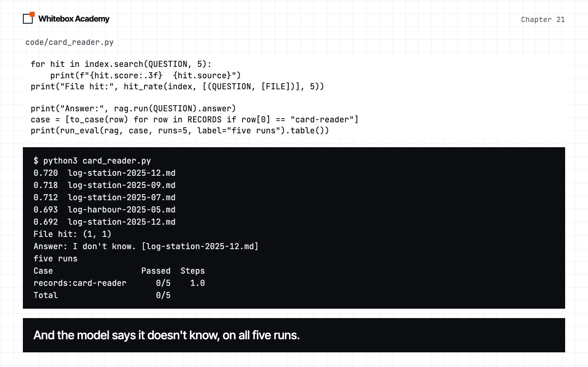
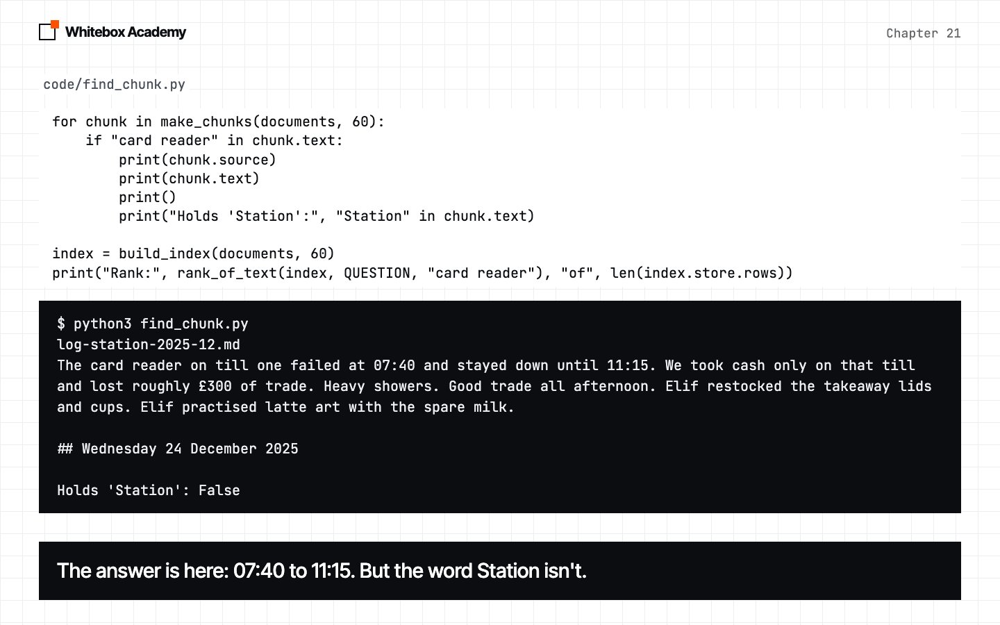
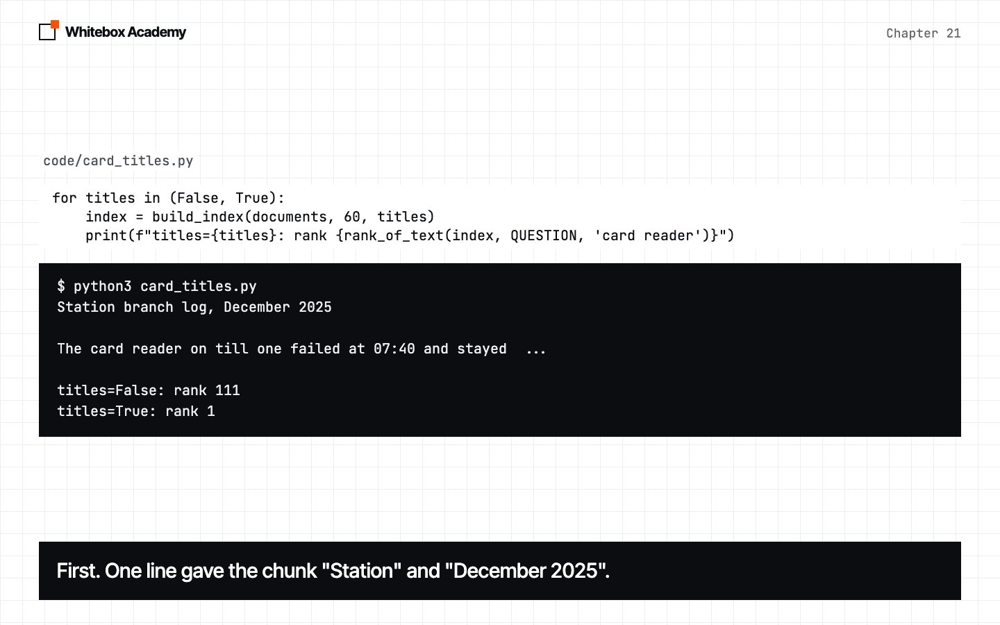
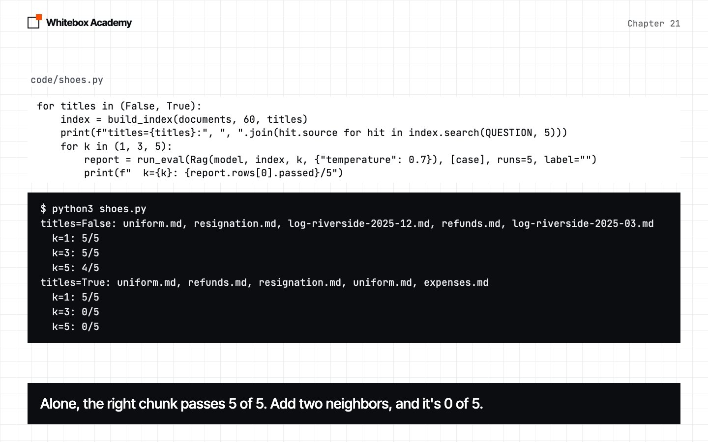
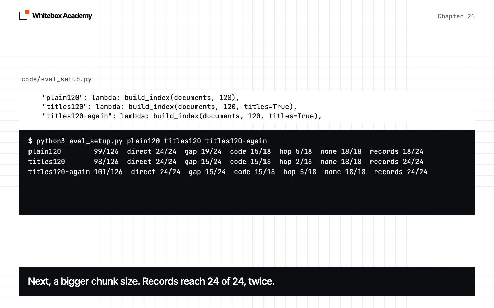
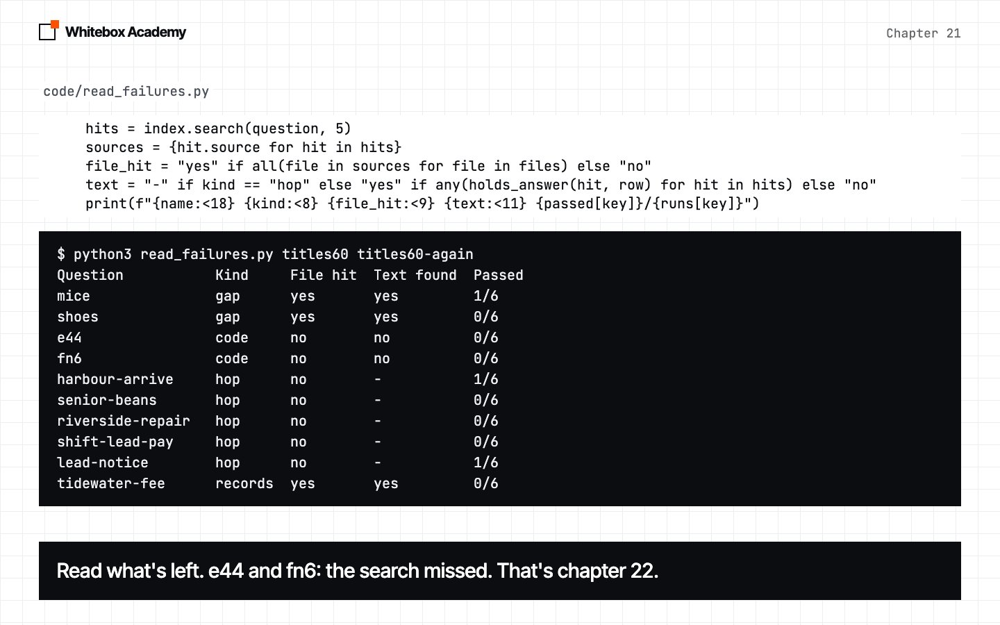

Better chunks
Repair what chunking lost, and learn to tell a real gain from noise.
Where we are
In chapter 20, you built the pipeline: cut documents into chunks, search once, and answer from the hits. You also saw that a file hit isn’t a right answer, and that whole files with enough room did as well as chunks. Chunks bought a smaller prompt, not a better score. They also cost something: a cut can separate a fact from the words that tell you what it’s about.
This chapter repairs that, with one idea: give every chunk its title. You’ll measure it, and you’ll see that a fix that works can still break something else. Chapter 22 then improves the search itself.
Before you start
Start Ollama, and activate the .venv you made in chapter 05. You need nomic-embed-text from chapter 19. If you don’t have it:
$ ollama pull nomic-embed-text
You’ll work in chapters/21-better-chunks/code. This chapter doesn’t use Chroma, so it runs on any Python version the course supports.
whitebox/rag.py has one change: a titles option on make_chunks. These things are provided, and you don’t need to change them:
questions.pyholds chapter 20’s 42 questions, with two checks corrected, because both marked right answers wrong.hairnow accepts “tie” as well as “tied”, andloyaltyaccepts “ten” as well as “tenth” and “10”. Every score in this chapter uses these checks.library.pyhas the small helpers the scripts share. You’ll meet them as they come up.results/holds our saved runs of this chapter’s evals. A script that reads results uses your own file if you’ve made one, and ours if you haven’t. So you can follow the whole chapter without the long evals.retrieval.py,tidewater_sizes.py,read_failures.py,all_setups.pyandtry_headings.pyare measuring scripts. Each section says what the script does and shows the part that matters.
The setup names say what’s in them. plain60 is chapter 20’s Rag on chunks of about 60 words, which chapter 20 called rag60. titles60 adds titles. plain120 and titles120 use chunks of about 120 words. A name ending in -again is the same setup, run a second time.
To check the framework itself, run this from code:
$ python3 -m pytest tests
You should see 53 passed. These tests use a fake model, so they don’t need Ollama.
Your scores will differ a little from ours, because the model samples at temperature 0.7.
A fact the pipeline can’t find
Chapter 20 left one failure for this chapter. Open card_reader.py:
index = build_index(all_documents(), 60)
rag = Rag(load_model(), index, k=5, options={"temperature": 0.7})
for hit in index.search(QUESTION, 5):
print(f"{hit.score:.3f} {hit.source}")
print("File hit:", hit_rate(index, [(QUESTION, [FILE])], 5))
print("Answer:", rag.run(QUESTION).answer)
case = [to_case(row) for row in RECORDS if row[0] == "card-reader"]
print(run_eval(rag, case, runs=5, label="five runs").table())
The question is “How long was the Station card reader down just before Christmas 2025?”. The file that holds the answer is log-station-2025-12.md, and it’s in the index.
Predict: will the right file come back? Will the answer be right?
$ python3 card_reader.py
0.720 log-station-2025-12.md 0.718 log-station-2025-09.md 0.712 log-station-2025-07.md 0.693 log-harbour-2025-05.md 0.692 log-station-2025-12.md File hit: (1, 1) Answer: I don't know. [log-station-2025-12.md] five runs Case Passed Steps records:card-reader 0/5 1.0 Total 0/5
The right file came first, and came back twice. hit_rate says 1 of 1. The model said “I don’t know”, and it failed all five runs. It even cited the right file.
That “I don’t know” is the system working as it should. The model only answers from what it’s given. So what was it given?

Look at the chunk
Never guess at a retrieval failure. Print the chunk. find_chunk.py finds the chunk with the fact in it, then uses rank_of_text, a helper from library.py, which searches every chunk and returns where the first one holding a phrase came:
for chunk in make_chunks(documents, 60):
if "card reader" in chunk.text:
print(chunk.source)
print(chunk.text)
print()
print("Holds 'Station':", "Station" in chunk.text)
index = build_index(documents, 60)
print("Rank:", rank_of_text(index, QUESTION, "card reader"), "of", len(index.store.rows))
$ python3 find_chunk.py
log-station-2025-12.md The card reader on till one failed at 07:40 and stayed down until 11:15. We took cash only on that till and lost roughly £300 of trade. Heavy showers. Good trade all afternoon. Elif restocked the takeaway lids and cups. Elif practised latte art with the spare milk. ## Wednesday 24 December 2025 Holds 'Station': False Rank: 111 of 934
The answer is right there: 07:40 to 11:15. But read it the way the embedding model does:
- It doesn’t say “Station”. That word is in the file’s title, on line 1, far from this chunk.
- It doesn’t have its own date. This happened on Tuesday 23 December, and that heading landed at the end of the chunk before. The only date here is the next day’s heading, left at the bottom.
- Most of it is about something else. Weather, pace, lids and latte art.
So the chunk ranked 111th of 934. It’s the same limit you saw with Tidewater in chapter 20: split_text doesn’t know what a heading is. Whole files didn’t have this problem, because a whole file keeps its title and its dates. Chunking lost them, so this is what we have to repair.

Two rulers
hit_rate said this question was fine, so it can’t guide this work. We need a stricter ruler. library.py has one. A ruler here just means a way of measuring:
def holds_answer(hit, row):
"""True if this hit came from a right file, and its text holds one of the row's answers."""
name, kind, question, answers, files = row
return hit.source in files and any(answer.lower() in hit.text.lower() for answer in answers)
def text_found(index, rows, k=5):
"""Like hit_rate, but a question only counts if a hit holds the answer text."""
found = 0
for row in rows:
found += any(holds_answer(hit, row) for hit in index.search(row[2], k))
return found, len(rows)
hit_rate asks “did the right file come back?”. text_found asks “did the text with the answer come back?”. retrieval.py prints both, at three values of k, with no chat model. The setup names are keys in a dictionary at the top of the script, and sys.argv[1:] is the list of names you typed after the script’s name.
File hit uses the 36 questions that name a file. Text found leaves out the 6 hop questions, because their answer needs two files, which leaves 30.
$ python3 retrieval.py plain60
File hit, of 36 Text found, of 30 Setup k=1 k=3 k=5 k=1 k=3 k=5 plain60 25 28 28 24 27 27
Different questions, so don’t subtract the columns. What you can do is ask which questions pass one ruler and fail the other. The card reader is one, and it’s why we keep both.
Text found is still a loose ruler. It looks for a short string like “85”, and you’ll see in section 5 that a chunk can hold the string and still mislead the model. So we’ll use three measures, from cheapest to most honest: file hit, text found, and the eval’s score on real answers.
Fix one: give every chunk its title
The chunk is missing the words that say what it’s about. The file’s first line has them, so copy that line onto every chunk. That’s the whole change to make_chunks:
def make_chunks(documents, size=120, titles=False):
"""Split documents into chunks. With titles, each chunk starts with its document's title."""
chunks = []
for name, text in documents.items():
title = text.splitlines()[0].lstrip("# ")
for piece in split_text(text, size):
starts_with_title = piece.startswith("#")
chunks.append(Chunk(f"{title}\n\n{piece}" if titles and not starts_with_title else piece, name))
return chunks
text.splitlines()[0]is the first line, andlstrip("# ")removes any#and spaces from its left.- A piece that already starts with
#is left alone, so a chunk doesn’t get its title twice. This check also skips chunks that start with a##heading, like## Monday 1 December 2025. The script below counts them.
card_titles.py builds the index both ways. The loop runs titles as False, then True:
chunks = make_chunks(documents, 60, titles=True)
titled = next(chunk for chunk in chunks if "card reader" in chunk.text)
print(titled.text[:90], "...")
print()
for titles in (False, True):
index = build_index(documents, 60, titles)
print(f"titles={titles}: rank {rank_of_text(index, QUESTION, 'card reader')}")
skipped = [chunk for chunk in chunks if chunk.text.startswith("##")]
print(f"{len(skipped)} of {len(chunks)} chunks start with a ## heading, so they get no title")
next(...) takes the first item a loop gives, and [:90] keeps the first 90 characters.
Predict: it ranked 111th. We added one line of text. Where will it rank now?
$ python3 card_titles.py
Station branch log, December 2025 The card reader on till one failed at 07:40 and stayed ... titles=False: rank 111 titles=True: rank 1 219 of 934 chunks start with a ## heading, so they get no title
From 111th to first. One line gave the chunk “Station” and “December 2025”. The last line is a limit of this version: those 219 chunks keep their date heading, but don’t say which branch they’re from. Exercise 3 fixes that.
The title goes into the vector, and it goes into the prompt too, so the model reads it as well. The cost is a few extra tokens on each chunk.
Now the rulers:
$ python3 retrieval.py plain60 titles60
File hit, of 36 Text found, of 30 Setup k=1 k=3 k=5 k=1 k=3 k=5 plain60 25 28 28 24 27 27 titles60 26 28 28 26 28 28
See the top-5 columns. File hit didn’t move, and text found went up by one. File hit couldn’t see this fix at all.

Did the answers improve?
Rulers aren’t answers. Open eval_setup.py. It’s chapter 20’s eval, with a dictionary of setups. Each value is a lambda, so the index is only built if you ask for it:
SETUPS = {
"plain60": lambda: build_index(documents, 60),
"plain60-again": lambda: build_index(documents, 60),
"titles60": lambda: build_index(documents, 60, titles=True),
"titles60-again": lambda: build_index(documents, 60, titles=True),
...
}
for label in sys.argv[1:]:
rag = Rag(model, SETUPS[label](), 5, {"temperature": 0.7})
report = run_eval(rag, cases, runs=3, label=label)
print(summary(report), flush=True)
report.save(f"{label}.json")
The -again setups are the same thing run twice. That’s chapter 18’s rule: compare a setup with itself first.
Predict: will titles beat plain60 by more than plain60 beats itself?
All four setups make 504 model calls, so you don’t have to run them. To see it work, run one setup, which is 126 calls:
$ python3 eval_setup.py titles60
Here’s our full run, from results/:
plain60 102/126 direct 24/24 gap 21/24 code 12/18 hop 8/18 none 18/18 records 19/24 plain60-again 98/126 direct 24/24 gap 21/24 code 12/18 hop 5/18 none 18/18 records 18/24 titles60 98/126 direct 24/24 gap 19/24 code 12/18 hop 4/18 none 18/18 records 21/24 titles60-again 97/126 direct 24/24 gap 18/24 code 12/18 hop 4/18 none 18/18 records 21/24
The total didn’t improve. The same setup moved 4 points against itself, so 98 and 97 against 102 and 98 says nothing. If you only read the totals, you’d say titles do nothing.
Read the rows. records went from 19 and 18 to 21 in both runs: that’s card-reader, from 0 of 6 to 6 of 6. The fix worked. But gap went down, from 21 and 21 to 19 and 18, and most of that is one question: shoes went from 6 of 6 to 0 of 6. Titles fixed one question and broke another.
Leave the hop column alone for now. It moves a lot from run to run, and chapter 23 looks at what’s in it.
This isn’t noise. Six out of six, then none. uniform.md is still the first hit, in both setups. What changed? shoes.py tests it, by changing k with and without titles, five runs each:
for titles in (False, True):
index = build_index(documents, 60, titles)
print(f"titles={titles}:", ", ".join(hit.source for hit in index.search(QUESTION, 5)))
for k in (1, 3, 5):
report = run_eval(Rag(model, index, k, {"temperature": 0.7}), [case], runs=5, label="")
print(f" k={k}: {report.rows[0].passed}/5")
$ python3 shoes.py
titles=False: uniform.md, resignation.md, log-riverside-2025-12.md, refunds.md, log-riverside-2025-03.md k=1: 5/5 k=3: 5/5 k=5: 4/5 titles=True: uniform.md, refunds.md, resignation.md, uniform.md, expenses.md k=1: 5/5 k=3: 0/5 k=5: 0/5
With the right chunk alone, titles pass 5 of 5. Add the next two hits, and it’s 0 of 5, with the right chunk still first. Without titles, the neighbors were mostly logs. With titles, they’re refunds.md and resignation.md, which look more relevant, and the model answers “I don’t know”. We’ve shown the neighbors matter. We haven’t shown why this model reacts that way, and it’s fine to leave that open. The lesson: a chunk in the prompt is competing with everything around it.
And Tidewater? Still 0 of 6. The title of suppliers.md is “Suppliers”, which doesn’t say Tidewater. Titles carry the file’s name, not the section’s, so they can’t repair a heading cut off inside a file. Exercise 1 goes after the cause.

Does chunk size matter?
Chapter 20 said size 60 and size 120 were too close to call. With titles on, is that still true?
$ python3 retrieval.py titles60 titles120 $ python3 eval_setup.py plain120 titles120 titles120-again
File hit, of 36 Text found, of 30 Setup k=1 k=3 k=5 k=1 k=3 k=5 titles60 26 28 28 26 28 28 titles120 22 26 28 21 26 28 plain120 99/126 direct 24/24 gap 19/24 code 15/18 hop 5/18 none 18/18 records 18/24 titles120 98/126 direct 24/24 gap 15/24 code 15/18 hop 2/18 none 18/18 records 24/24 titles120-again 101/126 direct 24/24 gap 15/24 code 15/18 hop 5/18 none 18/18 records 24/24
The totals are as close as ever, and titles120 moved 3 points against itself. So don’t pick a size from them. Read the rows again. Three things held across both titles120 runs:
recordsreached 24/24.codewas 15/18, against 12/18.gapwas 15/24, the lowest here, against 18 and 19. Bigger chunks lostquitas well asshoes.
So size 120 gained in one place and lost in another. Why did records improve? tidewater_sizes.py looks at the chunk with Tidewater’s fee:
$ python3 tidewater_sizes.py
size 60: 47 words, says Tidewater: False size 120: 118 words, says Tidewater: True
The bigger chunk happens to reach back past the heading. That’s a lucky cut, and it isn’t a repair. On other documents, 120 would cut somewhere else. Look at the first table too: at k=1, bigger chunks were worse, 21 against 26. As in chapter 20, chunk size isn’t something to pick from these numbers.

Read what’s left
all_setups.py prints every saved report, with no model calls:
$ python3 all_setups.py
plain60 102/126 direct 24/24 gap 21/24 code 12/18 hop 8/18 none 18/18 records 19/24 plain60-again 98/126 direct 24/24 gap 21/24 code 12/18 hop 5/18 none 18/18 records 18/24 titles60 98/126 direct 24/24 gap 19/24 code 12/18 hop 4/18 none 18/18 records 21/24 titles60-again 97/126 direct 24/24 gap 18/24 code 12/18 hop 4/18 none 18/18 records 21/24 plain120 99/126 direct 24/24 gap 19/24 code 15/18 hop 5/18 none 18/18 records 18/24 titles120 98/126 direct 24/24 gap 15/24 code 15/18 hop 2/18 none 18/18 records 24/24 titles120-again 101/126 direct 24/24 gap 15/24 code 15/18 hop 5/18 none 18/18 records 24/24
All seven totals sit between 97 and 102, and repeats of one setup differed by 4, 1 and 3. So these totals can’t be ranked. Three runs on 42 questions can’t separate setups this close. Here’s what the rows can support:
- Titles fixed what they were aimed at. Records rose to at least 21 in every setup with titles, and
card-readerwent from none to all. - Titles also broke
shoes, for a reason we tested but can’t fully explain. - Size 120 lifted
codeandrecords, and loweredgap.
And compare with chapter 20: titles got the records back to where whole files with room already were. That’s a repair of what chunks lost. It isn’t a gain over not chunking.
Finally, read what’s still failing. read_failures.py lists every question that lost a run in the two titles60 reports:
$ python3 read_failures.py titles60 titles60-again
Question Kind File hit Text found Passed mice gap yes yes 1/6 shoes gap yes yes 0/6 e44 code no no 0/6 fn6 code no no 0/6 harbour-arrive hop no - 1/6 senior-beans hop no - 0/6 riverside-repair hop no - 0/6 shift-lead-pay hop no - 0/6 lead-notice hop no - 1/6 tidewater-fee records yes yes 0/6
Three kinds of failure, and each needs a different fix:
e44,fn6: the search missed. Chapter 22 is about these.hop: these need two facts, and one search brings one. Chapter 23 is about these.mice,shoes,tidewater-fee: both rulers say yes, and the answer is still wrong. The text was in the prompt. For Tidewater it’s the “85” with no name beside it. Formice, the chunk says “pest contractor”, and the model didn’t connect that to mice. Only the eval on real answers saw these.
So file hit, text found and the eval each see more than the one before, and each costs more.

Reading errors
We triggered each of these for real, and the output is shortened.
| What happened | What you see | The fix |
|---|---|---|
| Ollama isn’t running | whitebox.models.ModelError: Couldn't reach Ollama | Start Ollama |
| You named a report that doesn’t exist | FileNotFoundError: [Errno 2] No such file or directory: 'results/nothing.json' | Use a name from eval_setup.py |
| You misspelled a setup | KeyError: 'title60' | Use a name from SETUPS |
You ran try_headings.py before TODO 1 | TypeError: 'NoneType' object is not iterable | Finish split_at_headings |
| A document was empty | IndexError: list index out of range | make_chunks reads each file’s first line, so remove the empty file |
One mistake gives no error at all: python3 eval_setup.py with no names runs nothing, and prints nothing.
Exercises
From chapters/21-better-chunks, open exercises.py and complete the five TODOs:
split_at_headings: keep a heading with the text below it, which is the cause behind Tidewater.file_but_no_text: list the questions that pass the file ruler and fail the text ruler.title_every_chunk: put the title on the chunks thatmake_chunksskips, the 219 from section 4.chunks_with: find the chunks that hold a phrase, asfind_chunk.pydoes.with_overlap: repeat the end of each piece at the start of the next, so a cut loses less.
The sys.path line at the top of exercises.py is provided. It lets the file find the whitebox package inside code/.
Then check your work from chapters/21-better-chunks. These checks use a fake embedder, so Ollama doesn’t need to be running:
$ python3 -m pytest test_exercises.py
You’ve finished when you see 5 passed. Worked answers are in exercises.py.
After TODO 1, see what it does. try_headings.py runs the eval on chunks cut at headings, without titles and then with them. It makes 252 model calls, so this one is optional. From code:
$ python3 try_headings.py
headings60 100/126 direct 24/24 gap 19/24 code 11/18 hop 7/18 none 18/18 records 21/24 card reader rank: 23 records:card-reader: 0/3 records:tidewater-fee: 3/3 both60 103/126 direct 24/24 gap 21/24 code 12/18 hop 4/18 none 18/18 records 24/24 card reader rank: 1 records:card-reader: 3/3 records:tidewater-fee: 3/3
Each fix covers what the other can’t. Cutting at headings alone fixed Tidewater, and left the card reader at rank 23, because a day’s chunk still doesn’t say “Station”. Titles alone did the opposite. Together, records reach 24/24 at size 60, with no lucky cut. The totals of 100 and 103 are one run each, inside the noise, so this isn’t a new winner. It’s the two causes, both repaired.
Common mistakes
- Trusting one run.
plain60scored 102, then 98, on the same setup. - Reading only the total. Titles’ total didn’t move, while one question went from none to all and another from all to none.
- Trusting a file hit. The card reader was a file hit on every failed run.
- Trusting text found. Tidewater’s fee was in the prompt, and the model still said £95.
- Guessing at a retrieval failure. Print the chunk.
- Copying these results. This is one set of documents, one model and 42 questions. Measure on yours.
Recap
- Chunking can cut a fact off from the words that say what it’s about. Print the chunk.
titles=Truecopies the file’s title onto its chunks. It repaired the card reader, and changed what sat next to other chunks.- File hit, text found and the eval are three rulers. Each sees more than the one before.
- Bigger chunks kept one heading by luck, and lost elsewhere. Don’t pick a size from these numbers.
- Setups a few points apart can’t be ranked. Read the rows.
Where this comes from
Adding a document’s context to its chunks is an old idea. Anthropic’s Contextual Retrieval describes a stronger version.